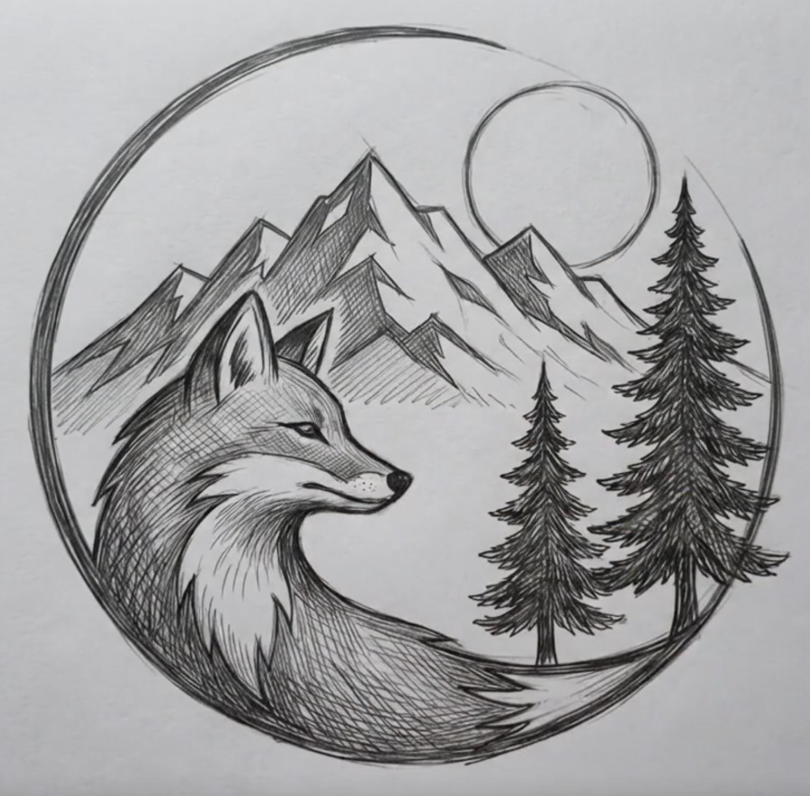

Experiment
Early projects moved between websites, ai technology, media, art, and small-business concepts.
Who we are
Fox & Timber grew through experimentation, adaptation, and a long trail of ideas that were often more complete in imagination than they ever became in the physical world.
The beginning
Fox & Timber wasn’t built around designing logos or launching websites. It was built around a simple belief… the strongest brands exist long before they’re ever seen.
Long before a company has a name, a product, or a customer, there’s an idea worth exploring. We help shape that idea into something people can recognize, remember, and trust. Every decision… from identity and packaging to photography, messaging, websites, and product presentation… works together to tell one clear story.
We don’t see disconnected pieces. We see complete brand systems. A logo isn’t just a logo; it’s the mark on the box, the label someone reaches for on the shelf, the business card they keep in their wallet, and the first impression that earns lasting recognition.
Fox & Timber exists to help businesses move beyond “just an idea” and become brands people can immediately picture, connect with, and believe in.
The evolution
Early projects moved between websites, ai technology, media, art, and small-business concepts.
The company learned its strongest skill was not operating every idea. It was making the idea easily understandable and believable.
Brand creation became the center: strategy, identity, visual direction, marketing concepts, and consulting.
Today, Fox & Timber helps other people see what their businesses could become before those businesses fully exist.

Why the fox
The fox represents the way we approach every project… with curiosity, careful observation, and the ability to adapt without losing direction. Like the strongest brands, it is recognizable in any environment. That philosophy guides everything we create, from visual identity and packaging to websites and complete brand systems.